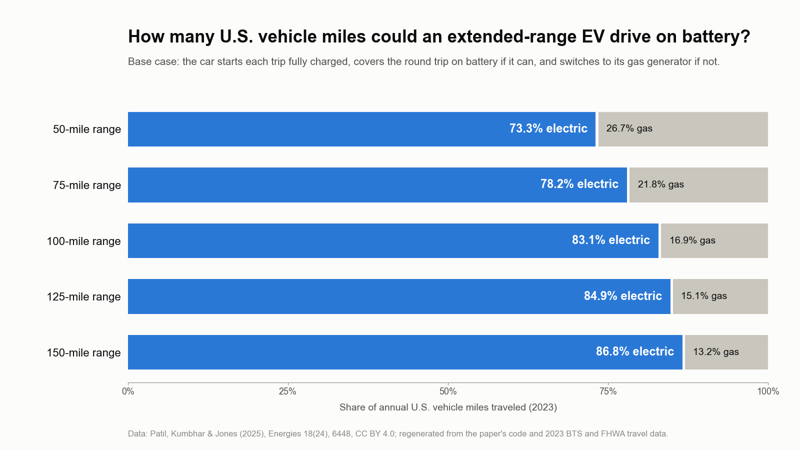

Extended-Range Electric Vehicles
How much U.S. driving an electric car with a backup gas generator could do on battery, and what range is enough.
- Published
- 2024–2025
- Electric vehicles
- Transportation
- Emissions
- Electrification

In plain English
Most plans to electrify driving focus on fully battery-electric cars. This project asks a practical question about an alternative, extended-range electric vehicles (EREVs), which run on battery and fall back on a small gasoline generator: how much battery is enough? It grew out of the lab's earlier work on shared autonomous vehicles, which asked how new vehicle technologies change emissions, and it became a published paper in Energies in 2025.
The analysis is built so anyone can check it. Public national trip-distance and vehicle-mile data go in; the split of miles between battery and gasoline comes out, for any electric range and charging habit. That makes follow-up questions cheap to ask, such as how charging access changes the answer for people who can't plug in at home, or how the grid's emissions change the carbon benefit.
Main points
- Uses only public federal travel data, from the Bureau of Transportation Statistics and the Federal Highway Administration, so the results can be repeated.
- Separates two decisions that often get mixed up: how big the battery should be, and how often drivers can plug in.
- Treats EREVs as a complement to fully electric cars, especially for drivers who can't charge every day.
- Shares its lineage with the lab's shared-mobility and high-speed rail work, which also asks how vehicle technology and travel choices change emissions.
Interactive demoDecarbonizing travel →
Papers
A 50-mile electric range covers nearly three-quarters of U.S. driving
Patil, H.V., Kumbhar, A.A., & Jones, E.C., Jr. (2025). Contributions of extended-range electric vehicles (EREVs) to electrified miles, emissions and transportation cost reduction. Energies, 18(24), 6448. https://doi.org/10.3390/en18246448
How much U.S. driving could extended-range EVs do on battery? A 50-mile range electrifies 73% of miles; 150 miles, 87%.
- An EREV with a 50-mile electric range could drive 73.3% of 2023 U.S. light-duty vehicle miles on electricity, about 2.39 trillion miles a year; a 150-mile range raises that to 86.8%.
- Returns shrink past about 100 miles: going from 50 to 100 miles adds about 320 billion electric miles a year, but 100 to 150 adds only about 121 billion, while the fleet's battery capacity keeps climbing from 3.6 to 10.7 TWh.
- At national-average efficiency and grid emissions, annual CO2 savings rise from about 574 million tonnes at 50 miles to about 680 million tonnes at 150 miles, while the battery cost per tonne of CO2 avoided rises about two and a half times.
- Drivers who charge fewer than five times a week can lose up to 75% of their potential electric miles; longer ranges soften that loss.
![Line chart of the share of U.S. vehicle miles driven on electricity against the battery capacity needed to convert every U.S. light-duty vehicle. Points for extended-range EVs: 25 miles of range, 1.8 TWh, 59.4%; 50 miles, 3.6 TWh, 73.3%; 75 miles, 5.4 TWh, 78.2%; 100 miles, 7.2 TWh, 83.1%; 125 miles, 8.9 TWh, 84.9%; 150 miles, 10.7 TWh, 86.8%. A dashed line runs to an all-electric car with an 83 kWh battery at 21.5 TWh and 100%. Brackets note that going from 50 to 100 miles adds 9.8 percentage points for 3.6 TWh, and from 100 to 150 miles only 3.7 points for 3.5 TWh.](img/paper-extended-range-evs-2025.png)
Code and materials
People
- Erick C. Jones Jr., PhD, PEPrincipal Investigator · SEAR Lab directorin
- Hritik PatilPaper author (2025)
- Akhilesh KumbharPaper author (2025)
Profiles marked in link to LinkedIn. More past and present lab members are on the SEAR Lab team page.